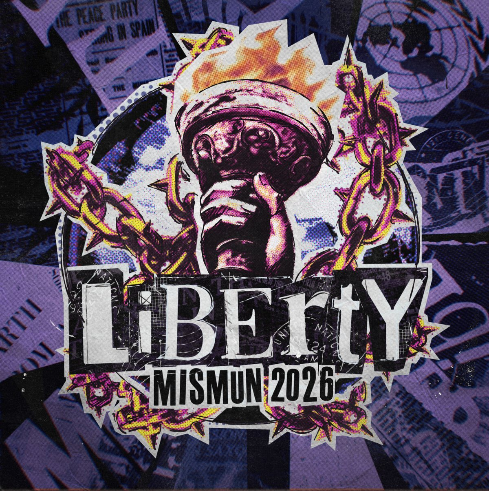
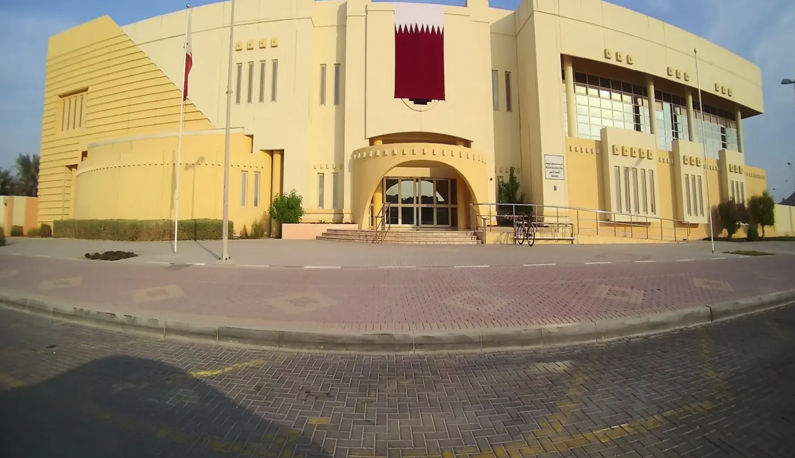

About MISMUN
Who we are, what Liberty stands for, and where it all happens.
What is MISMUN?
Mesaieed International School Model United Nations (MISMUN) is an annual conference run by students. Each delegate represents a country in a simulated UN committee, where they debate global issues, negotiate with other delegations and draft resolutions, learning how international diplomacy works along the way. This year’s conference is the 9th.
MUN has been part of school life at Mesaieed International School for nearly a decade. Experienced delegates and student leaders train the students who come after them, which is how the club has carried on from one year group to the next. The conference is where students test their views against other delegations’ and work together on practical solutions to global problems.

Liberty
Liberty is the theme of the 9th annual MISMUN. For some people freedom is a given; for many others it is still a promise that hasn’t been kept. We’re asking delegates to think about the freedoms they take for granted, and about their part in protecting the rights of people who don’t have them.
Liberty includes the right to speak out against injustice and to live with dignity. A resolution on its own won’t protect either, so we want delegates to speak up, listen to each other and argue for changes they actually believe in.

Where it happens
MISMUN 2026 takes place on 3 and 4 December at the Secondary Branch of Mesaieed International School. The opening and closing ceremonies are in the Main Hall, and each committee debates in its own committee room.
- Edition9th annual
- Dates3–4 December 2026
- VenueMesaieed International School
- CityMesaieed, Qatar
- Follow@mismunqa